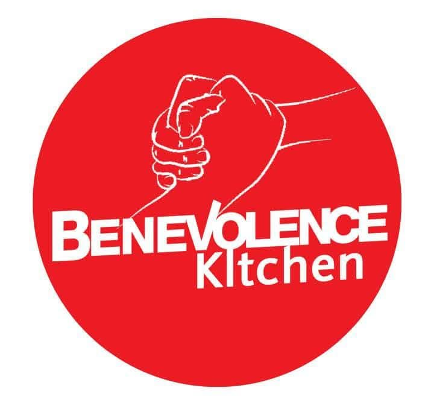
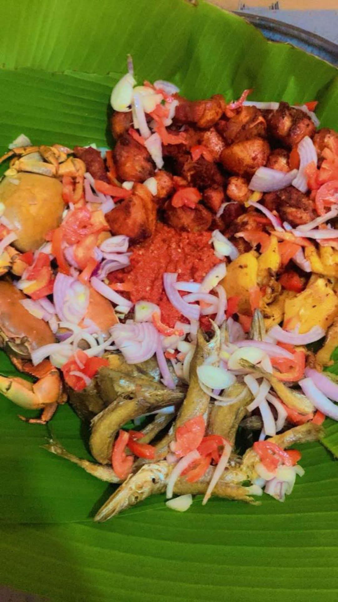
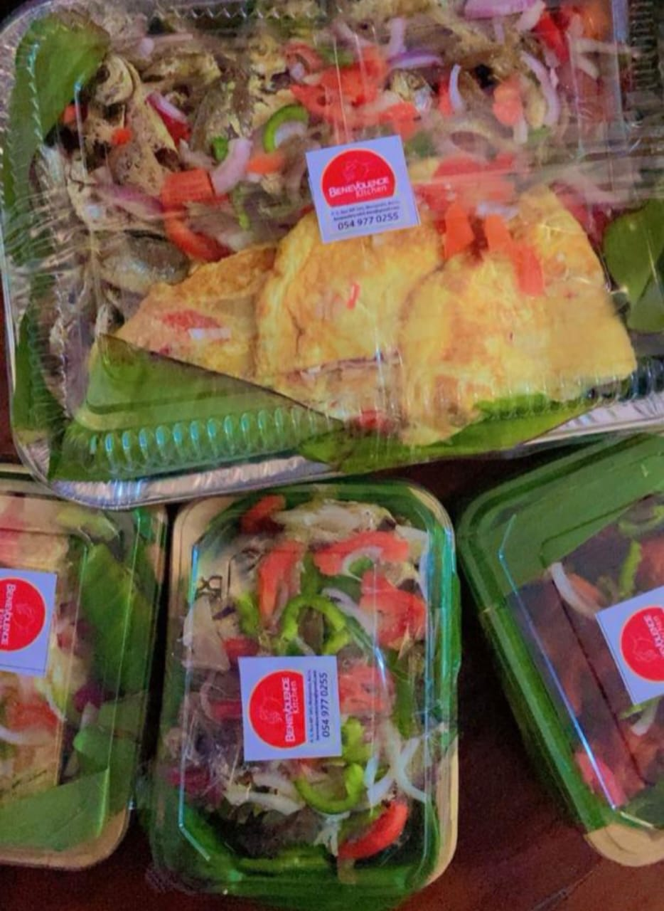
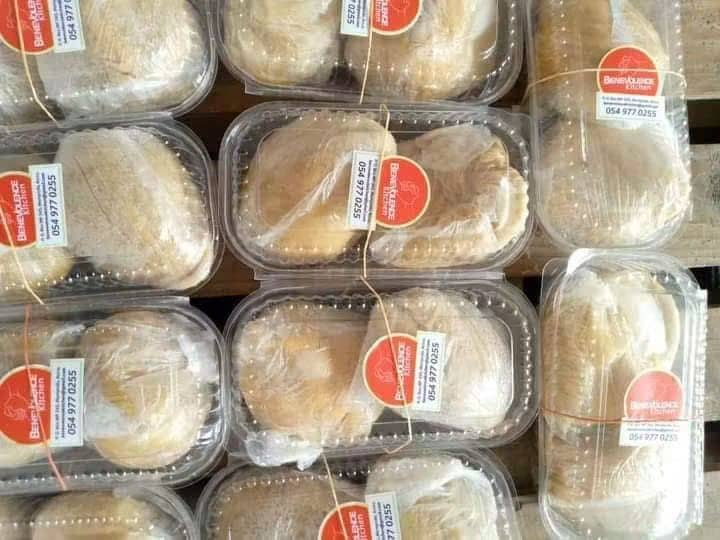
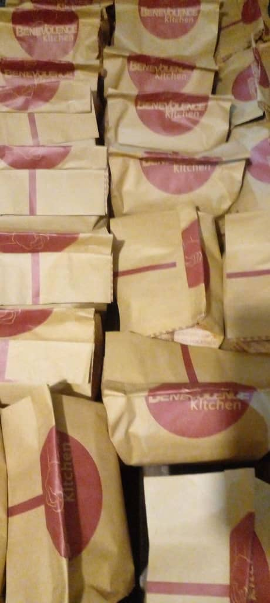
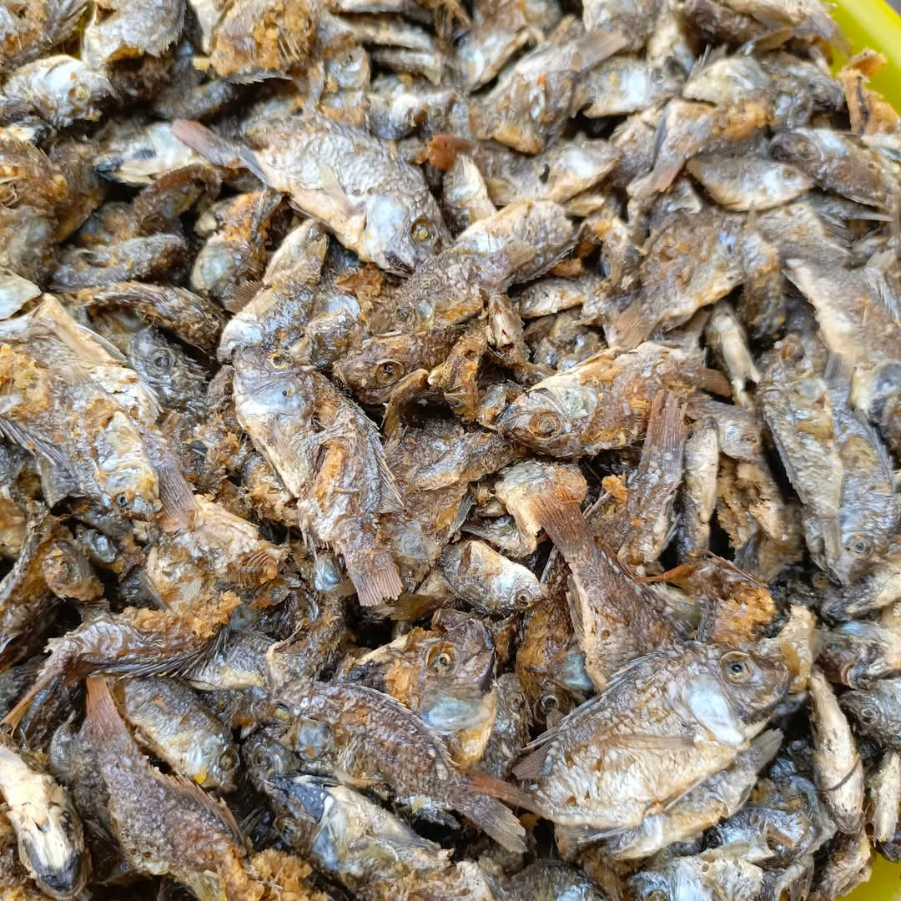

Made to order
Fresh, generous, full of flavour.

BenevolenceAUTHENTIC GHANAIAN KITCHEN · ACCRA
We pamper your taste buds with authentic Ghanaian flavours, lovingly prepared just for you.

MADE WITH
purposeTODAY'S INVITATION
Pull up a chair. Good food. Warm people. Big Ghanaian flavour.Fresh, generous, full of flavour.
Dine in, pickup or delivery.
MEET THE FOUNDER
FOUNDER, CEO & CHIEF COOK
I’m Harold “Korle” Quaye, an entrepreneur, martial artist, and health & fitness enthusiast based in Accra. Benevolence Kitchen was born from my love for food, creativity, and the joy of bringing people together through memorable dining experiences.
Food is comfort, connection, celebration, and an expression of love. I’m personally involved in every part of the journey—from refining dishes to building a brand grounded in quality, warmth, authenticity, and excellent service.
My vision is simple: serve delicious food, create meaningful experiences, and bring people together with purpose and benevolence.
Come say hello ↗A FEAST FOR THE EYES




COME HUNGRY, LEAVE HAPPY
Order by phone or WhatsApp
Dine-in · Pickup · Delivery
Benevolence Kitchen
@benevolencekitchen